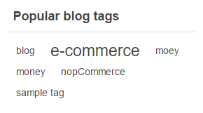
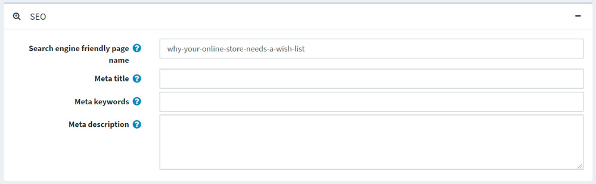
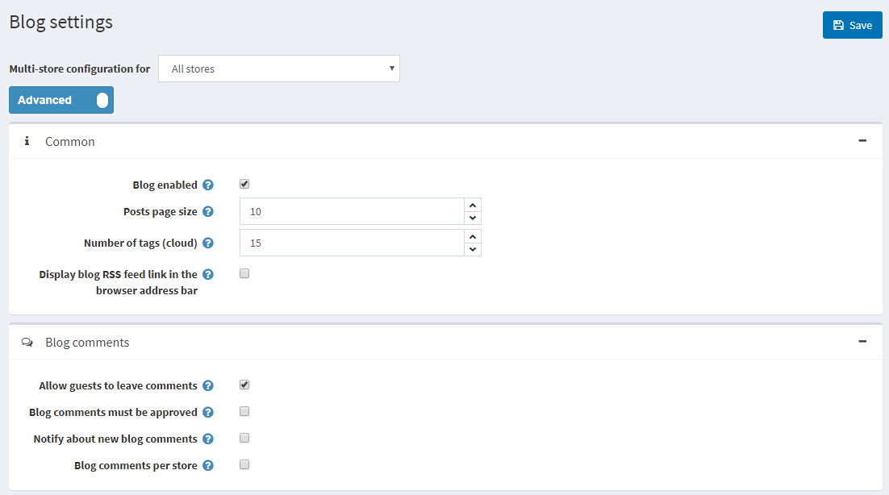

Blog
A blog is a great way to connect with your existing customers, keeping them informed about the latest product offerings or educating them, and to find new customers.
To manage blog posts, go to Content management → Blog posts.
Add a new blog post
Click Add new and fill in the information about the new blog post.
Info
In the Info panel, define the following blog post details:
If more than one language is enabled, from the Language dropdown list, select the language of this blog post. Customers will only see blog posts in their selected language.
Enter the Title of this blog post.
Enter the Body text of this blog post.
You can specify the Body overview if you want only a part of the text to be visible on the main blog page where all blog posts are listed.
Enter Tags to be displayed on the blog page in the public store. Tags are keywords that this blog post can also be identified by. Enter a comma-separated list of the tags associated with this blog post. The more blog posts are associated with a particular tag, the larger size it has in the "Popular tags" area displayed on the sidebar on the blog page. 
Select the Allow comments checkbox to enable customers to add comments to this blog post.
Select the Include in sitemap checkbox to include the blog post in the sitemap.
Enter the Start date and End date for displaying this blog post in Coordinated Universal Time (UTC).
Note
You can leave these fields empty if you do not want to define the blog post's start and end dates.
- Choose the stores in the Limited to stores field to enable this blog post for specific stores only. Leave the field empty in case this functionality is not required.
Note
In order to use this functionality, you have to disable the following setting: Catalog settings → Ignore "limit per store" rules (sitewide). Read more about multi-store functionality here.
While editing an existing blog post or after clicking the Save and continue edit button for a new one, you can click the Preview button in the top right to see how the blog post will appear on the site.
SEO
In the SEO panel, define the following blog post details: 
- Define the Search engine friendly page name. For example, enter "the-best-news" to make your URL
http://yourStore.com/the-best-news. Leave this field empty to generate it automatically based on the title of the blog post. - Override the page title in the Meta title field (the default title is the title of the blog post).
- Enter Meta keywords to be added to the blog post's header. They represent a brief and concise list of the most important themes on the page.
- Enter Meta description to be added to the blog post's header. The meta description tag is a brief and concise summary of the page content.
Manage blog comments
To manage blog comments, select Content management → Blog comments.

Use the Approve selected button to approve the selected comments and Disapprove selected to disapprove ones. You can also edit or delete a blog comment. If deleted, the comment will be removed from the system.
Blog settings
You can manage blog settings in Configuration → Settings → Blog settings. This page is available in 2 modes: advanced and basic.
This page enables multi-store configuration; it means that the same settings can be defined for all stores or differ from store to store. If you want to manage settings for a certain store, choose its name from the multi-store configuration dropdown list and select all the checkboxes needed on the left to set custom values for them. For further details, refer to Multi-store.

Common
Define the following Common settings:
- Select the Blog enabled checkbox to enable the blog functionality in your store.
- In the Posts page size field, set the number of posts per page.
- In the Number of tags (cloud) field, enter the number of tags that appear in the tag cloud.
- Select the Display blog RSS feed link in the browser address bar checkbox to show the blog RSS feed link in the browser address bar.
Blog comments
Define the following Blog comments settings:
- Select the Allow guests to leave comments checkbox to enable nonregistered users to add comments to the blog.
- Select the Blog comments must be approved checkbox if blog comments must be approved by the administrator.
- Select the Notify about new blog comments checkbox to notify the store owner about new blog comments.
- Select the Blog comments per store checkbox to display blog comments written in the current store only.
Click Save.
Note
You can enable CAPTCHA for blog comments for security purposes. For more information, proceed to the CAPTCHA section.